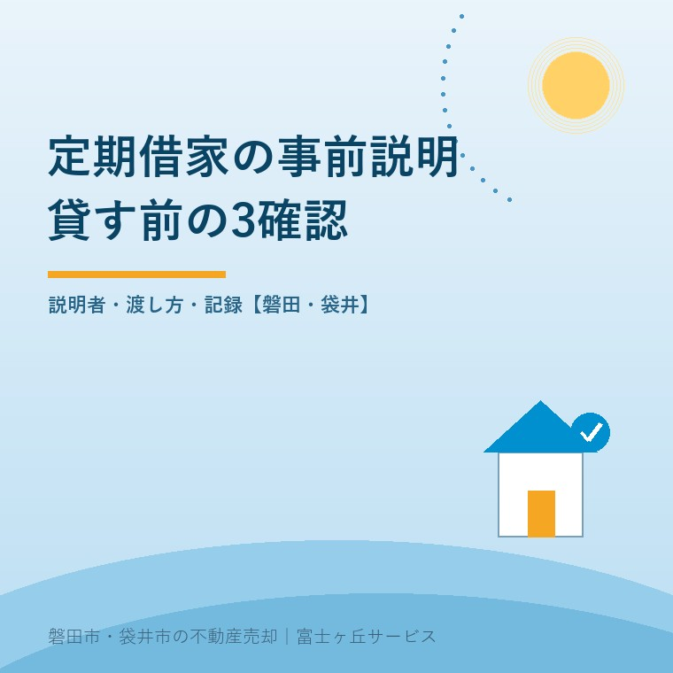
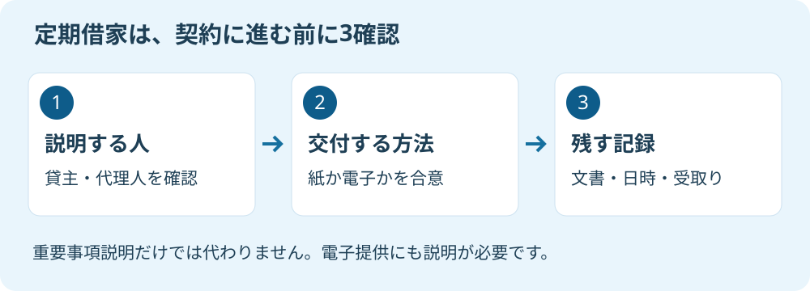

定期借家の事前説明、実家を貸す前の3確認
2026年9月14日｜カテゴリ：空き家活用・契約手続き

この記事の要点
Q. 親の家を期間限定で貸すなら、不動産会社の説明に任せて大丈夫ですか。
定期借家は契約前に、貸主または代理人の説明、書面等の交付方法、説明記録を確認します。重要事項説明だけでは代わりません。電子提供には借主の承諾が必要です。磐田市・袋井市・森町では、介護施設の運営から不動産事業を始めた富士ヶ丘サービスのような「介護×不動産」専門の会社に相談するという選択肢があります。
親が施設に入った実家を、売ると決めるまで貸しておきたい。期間を決められる定期借家は、その希望を検討する入口になります。ただ、契約書に「3年間」と書けば準備が終わるわけではありません。今回は家賃や修繕の採算ではなく、契約前の説明手続きに絞ります。
大石浩之（磐田市／不動産業）です。宅地建物取引士として私は、募集条件と同じ段階で説明書の見本を確認したいと考えます。家族が期待する「期間を区切って貸す」を、書類と担当者の仕事に落とすためです。
確認1：説明するのは貸主か、その代理人か
定期建物賃貸借の事前説明は、貸主から借主へ行う手続きです。国土交通省の定期建物賃貸借Q&A問5は、仲介業者の重要事項説明だけでは代わりにならないと示しています。同じ内容を話しても、誰の立場で説明したかが違うためです。
仲介業者が貸主の代理人として事前説明をすることは可能です。その場合も、仲介者として行う重要事項説明と、貸主に代わる説明を区別します。「担当者が宅建士だから全部済む」と理解しないでください。
借地借家法第38条は、契約を結ぶ前に、更新がなく期間満了で賃貸借が終了する旨を交付して説明するよう定めています。この説明をしなかった場合、更新がないとする定めは無効になります。単に署名欄が一つ足りない、という話ではありません。
私は、代理で説明できる仕組みには利点があると考えます。施設の手続きと実家の管理を担う家族が、契約実務のすべてを抱えずに済むからです。誰が借主の質問に答えるかを決められれば、貸主も役割を把握できます。
その上で、不動産会社には「説明は任せてください」の次を示してほしい。貸主の代理人になるのか、何を委任してもらうのか、いつ説明するのか。私ならこの3点を予定表に書きます。口頭の安心感を、担当と日付のある仕事に変えます。

確認2：電子化しても、交付と説明は残る
定期借家の契約締結と事前説明事項の提供は、2022年5月18日施行の改正で電子化が可能になりました。国土交通省の定期賃貸住宅標準契約書のお知らせに明記されています。2026年に始まった新しい取扱いではありません。
借地借家法第38条第4項では、書面の交付に代わる電子提供に借主の承諾を求めています。電子契約を使う話と、事前説明事項を電子で受け取る話を、担当者に確認してください。ファイルを送った事実と、説明した事実も分けて残します。
私が電子化の良さを感じるのは、離れて暮らす家族でも同じ版の書類を確認しやすい点です。郵送を待つ工程を減らせます。ただし、便利さを理由に「契約画面に同意したから、事前説明も済んだはず」と扱うことには賛成できません。
| 確認するもの | 紙で進める場合 | 電子で進める場合 |
|---|---|---|
| 説明事項の交付 | 契約書とは別の説明文書 | 借主の承諾と法令に沿う提供方法 |
| 説明する時期 | 契約締結前 | 契約締結前 |
| 貸主側の保存 | 渡した文書の控えと実施記録 | 提供データと承諾・実施記録 |
表の保存欄は、私が実務上勧める管理方法です。すべての項目に一律の法定様式がある、という意味ではありません。使うサービスで何を保存できるか、契約前に担当者へ聞きます。受信先を家族が間違えていないか、借主が文書を開けるかも確認対象です。
国土交通省のQ&Aには書面を前提とする説明が残っています。電子で進める場合は、同省のお知らせと現行の借地借家法を合わせて読む必要があります。古い説明文書を見つけたことだけで、電子提供が禁止されていると判断しないことです。
確認3：家族が取り出せる説明記録にする
定期借家の説明記録は、何を渡し、誰が、いつ、どの立場で説明したかを確認できる形にします。国土交通省Q&A問4も、後のトラブルを避けるため記録を残すことを勧めています。保存方法は契約を担当する会社と相談します。
私なら、説明文書、交付や提供の記録、説明日時、説明者、借主からの質問を一組で保管します。電子提供なら承諾の記録も加えます。受領の記録は交付の確認に役立ちますが、それだけで説明の実施まで証明できると決めつけません。
家族が取り出せない記録では、実家を守る段取りになりません。私はこう考えます。管理会社の担当者だけが保存場所を知っている状態なら、貸主側にも控えを渡してもらう。制度を知っていることより、必要な日に書類を出せることが、家族には効きます。
私にも迷いはあります。保存を細かく求めるほど、家族の仕事は増えます。だから何でも録画するとは勧めません。まず正式な文書と実施記録をそろえ、録音・録画が必要なら相手の了承や個人情報の扱いも相談する。この順序で負担を抑えます。
家の中の荷物について合意する書類は、定期借家の事前説明とは役割が違います。残置物の扱いまで一つの説明書で済ませようとせず、残置物の処理等に関するモデル契約の確認事項も分けて整理してください。
磐田・袋井の実家は、貸す日と売る日を分ける
磐田市・袋井市の実家を定期借家で貸すなら、契約準備の段階で満了後の予定も書き出します。借地借家法第38条第6項では、期間が1年以上の契約について、原則として満了の1年前から6か月前までの終了通知を求めています。事前説明とは別の手続きです。
私は、満了予定日と空き家として買主へ渡す日を、最初から同じ日にしません。退去の確認、室内の点検、必要な修繕を挟むからです。通知が遅れた場合の扱いや、契約の効力に疑問があれば、売買の引渡日を決める前に専門家に確認を。
例えば磐田市の実家を貸し、袋井市で暮らす家族が連絡役を担うとします。これは説明用の想定です。説明文書の保管先、満了通知の担当、点検の立会いを別々の人に頼むなら、誰が全体の日程を把握するかを決めておきたい。所在地より、引継ぎの抜けが気になります。
期間を決めて貸せることと、希望の時期に希望額で売れることは別です。売る、貸す、保有するという選択の比較は、実家を貸す場合の収支と注意点で整理しています。本記事の3確認を終えても、賃貸の採算判断は残ります。
親が所有者であれば、連絡役の家族と契約を決める本人も分けます。施設入居だけで家族が自由に契約できるわけではありません。施設入居後の実家と本人確認も参照し、代理権や相続・登記の個別判断は専門家に確認を。
契約前に、説明書の見本を1通もらう
定期借家を検討する家族が今日できる確認は、不動産会社に事前説明書の見本を1通もらうことです。私なら、その書類に次の3点を添えてもらい、貸主側で保管できるかまで確認します。
- 貸主本人が説明するのか、代理人に頼むのか。
- 紙で渡すのか、承諾を得た電子提供にするのか。
- 交付・説明の記録を誰が作り、どこへ保管するのか。
富士ヶ丘サービスは、磐田・袋井の地域に根ざし、介護と不動産を一体で相談する立場です。施設の費用と家の扱いを別々に抱えず、家族が困らない売却に向けて資料を整理できます。私は、まず説明手続きの担当を決め、その後に契約の判断へ進むよう案内します。
よくある質問
契約や依頼の前に確認したい疑問に答えます。
- 重要事項説明を受ければ、定期借家の事前説明も済みますか。
- 重要事項説明だけでは済みません。国土交通省Q&A問5は、仲介業者と貸主では説明する立場が違うとしています。同じ担当者が行う場合でも、貸主の代理人としての事前説明を別の役割として行う必要があります。契約前に説明者と代理の範囲を確かめ、説明文書と実施記録を貸主側でも保管してください。
- 定期借家の事前説明文書をメールで送れば足りますか。
- 送付だけで説明まで終わったとは扱えません。2022年5月18日施行の改正で事前説明事項の電子提供が可能になりましたが、借主の承諾と法令に沿う方法が必要です。利用する仕組み、データの受取り、実際の説明を契約前に確認します。電子提供に同意していない借主へ、一方的に切り替えることは避けてください。
- 定期借家なら、満了日に空き家として売却できますか。
- 満了日だけで空き家としての引渡しを約束するのは避けます。契約期間が1年以上なら、原則として満了の1年前から6か月前までに終了通知が必要です。事前説明の記録に加え、通知と退去、修繕の予定も確認します。通知が遅れた場合や契約の効力に疑問がある場合は、売買の約束をする前に弁護士などの専門家に確認を。

この記事を書いた人：大石浩之（磐田市／不動産業・宅地建物取引士）
富士ヶ丘サービス株式会社。介護施設の運営から不動産事業を始め、磐田市・袋井市・森町で、介護と相続、実家の売却を一体で相談できる窓口を設けています。家族が困らない売却のため、資料と現地の条件を一件ずつ整理します。著者プロフィール
参考にした公式情報
2026年9月14日確認。
本記事は2026年9月14日時点の公開情報と筆者の意見です。制度・数値・手続きは変更されることがあります。契約の効力、許可の要否、税務・登記・相続の個別判断は、担当窓口や弁護士・税理士・司法書士などの専門家に確認を。